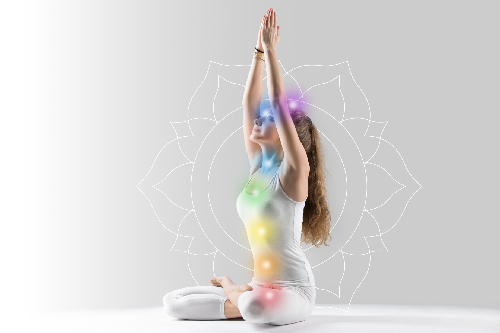

<!--
--
-- Главная страница для залогиненного пользователя
--
-->

{% set logged = "yes" %} {% extends "master/master.html" %} {% block content %}

<div class="page page-main">
  <section class="section section--01">
    <div class="container">
      <div class="section__content">
        <h1 class="section__title">Yoga Care</h1>
        <div class="section__description">
          Сервис поможет достичь желаемых изменений в жизни с помощью
          индивидуальной программы занятий по Кундалини йоге, составленной для
          вас на основании анализа ваших приоритетов и возможностей.
        </div>
        {{ fieldButton({ tag: 'a', href: '../pages/my-program.html', typeClass:
        '3', sizeClass: '1', content: 'Подобрать программу' }) }}
      </div>
      
    </div>
  </section>
  <section class="section section--03">
    <div class="container">
      <div class="section__content">
        <h3 class="section__subtitle">
          Кундалини йога стала одним из самых масштабных и популярных
          направлений в йоге. Она расширяет сознание и укрепляет связь с Душой,
          Высшим Я и Источником.
        </h3>
        <div class="section__description">
          Правильно подобранные практики кундалини йоги и их регулярность
          бережно гармонизируют нервную систему, раскрепощают телесные блоки,
          нормализуют обмен веществ и высвобождают закрепощённую энергию.
        </div>
      </div>
      
    </div>
  </section>
  <section class="section section--04">
    <div class="container">
      
      <div class="section__content">
        <h2 class="section__title">Вы хотите что-то изменить?</h2>
        <div class="section__description">Наш подход для тех, кто хочет:</div>
        <ul class="section__list">
          <li>Раскрыть собственный потенциал</li>
          <li>Улучшить самочувствие</li>
          <li>Увеличить приток энергии</li>
          <li>Раскрепостить телесные зажимы</li>
          <li>Сбалансировать стрессоустойчивость</li>
          <li>Выпустить творческую энергию</li>
          <li>Укрепить внутреннюю опору</li>
          <li>Пробудить мощь организма, расширив Ваши возможности</li>
        </ul>
      </div>
    </div>
  </section>
  <section class="section section--05">
    <div class="container">
      <section class="section__wrapper">
        <div class="section__content">
          <h2 class="section__title">
            <i class="icon-yoga"></i> Как изменится Ваша жизнь?
          </h2>
          <div class="section__description">
            При регулярных тренировках укрепляется физическое и ментальное
            здоровье. Повышая тем самым уровень Вашей жизненной энергии, которую
            Вы можете направить на реализацию Ваших намерений, улучшение дохода
            и прочие блага.
          </div>
        </div>
        
      </section>
    </div>
  </section>
</div>

{% endblock %}

<!--
--
-- Конец главной страницы для залогиненного пользователя
--
-->
